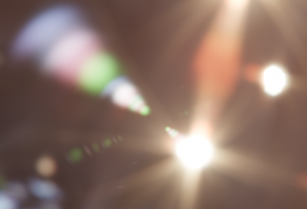
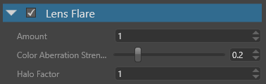

レンズ フレア
中級 アーティスト
レンズフレア（Lens flare） エフェクトは、現実世界のレンズでの光の内部反射や散乱によって生じるアーティファクトをシミュレートします。

一般的に、アーティファクトはオリジナルの明るいスポットと画面の中心で定義される線に沿って並んでいます。最も顕著なアーティファクトは、スポット光に対して画面の中心を挟んで正確に対称になります。
プロパティ

| プロパティ | 説明 |
|---|---|
| Amount | ライトストリークの強さ |
| Color Aberration Strength | 色収差アーティファクトの強さ |
| Halo Factor | 主なアーティファクトの強度 |